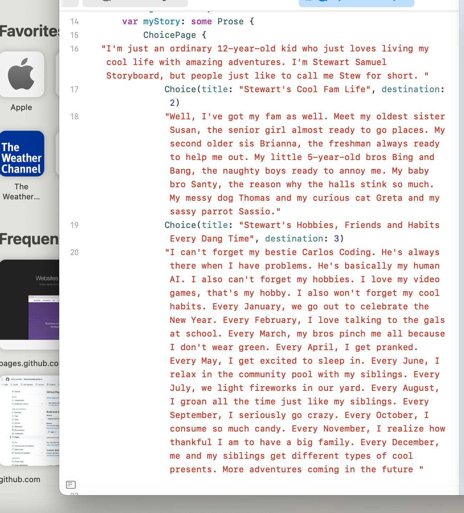
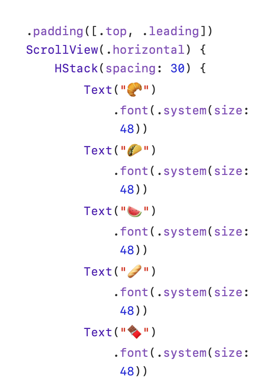

Unit 4 Concepts
 Concepts Covered
Exploring the Fundamentals of SwiftUI Code
This concept introduces the basic building blocks of SwiftUI, allowing you to understand how to structure your code effectively.
Customizing the Home Tab
Learn how to personalize the home tab of your app to improve user experience and make it more engaging.
Creating a Scrolling Narrative
Implement a storytelling feature that allows users to scroll through narratives smoothly, enhancing the interactive experience.
Experimenting with Various Layouts and Attention Grabbers
Explore different layout designs and attention-grabbing elements that keep users engaged with your app's content.
Learn to Show Your Favorites Three Different Ways
Discover various methods to display favorite items, catering to different user preferences and improving usability.
Customizing the Favorites Tab
Personalize the favorites tab to highlight important items and make navigation more intuitive for users.
Learning about Buttons and State
Understand the role of buttons and state management in your app, facilitating interactive and dynamic user experiences.
Making it Yours
Implement customization options that allow users to tailor the app to their own preferences and needs.
Setting Up a Tabbed Interface
Create a tabbed interface to organize your app's content effectively, improving navigation and accessibility.
Creating Your Own Tab
Learn how to create custom tabs that fit your app’s unique features and functionalities, enhancing user engagement.
Adding Your Tab
Implement the functionality to add new tabs dynamically, allowing for more content exploration within your app.
Creating Your Own Story
Delve into the process of crafting interactive stories, enabling users to engage with content in creative ways.
Keeping the Story Going
Develop techniques for extending narratives, ensuring users have a continuous and enjoyable experience.
The Final Chapter
Conclude narratives effectively, providing closure and satisfaction for users as they finish their stories.
Personalizing the Cover Page
Learn how to design customizable cover pages that reflect the user’s identity or preferences.
Adding a Dedication
Incorporate personal dedications into your stories, giving users a chance to express themselves.
Setting Up a Story With Choices
Create branching narratives where users can make choices that affect the outcome of the story.
Adding Destinations
Implement features that allow users to add destinations in their stories, enhancing interactivity and engagement.
Creating Your Own Adventure Story
Guide users in developing their adventure stories, fostering creativity and narrative skills.
Creating More Choices and Pages
Learn how to add additional choices and pages to enrich the storytelling experience and expand user interaction.